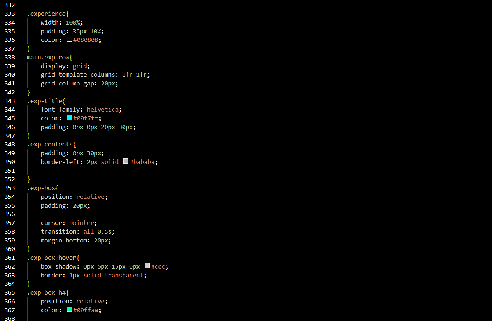
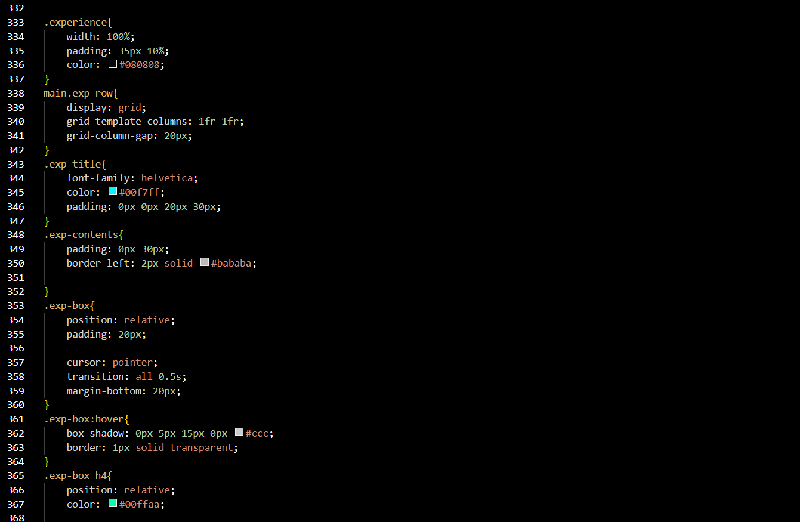
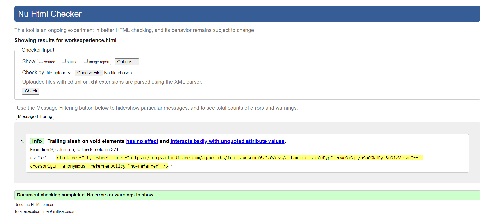
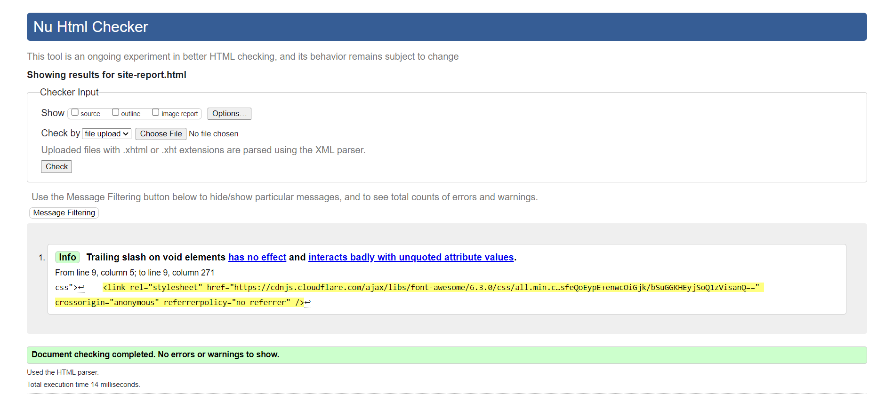
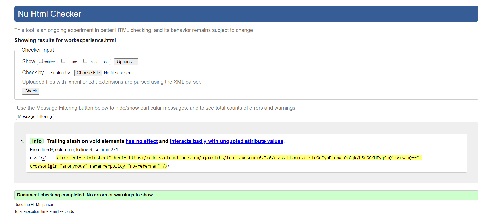
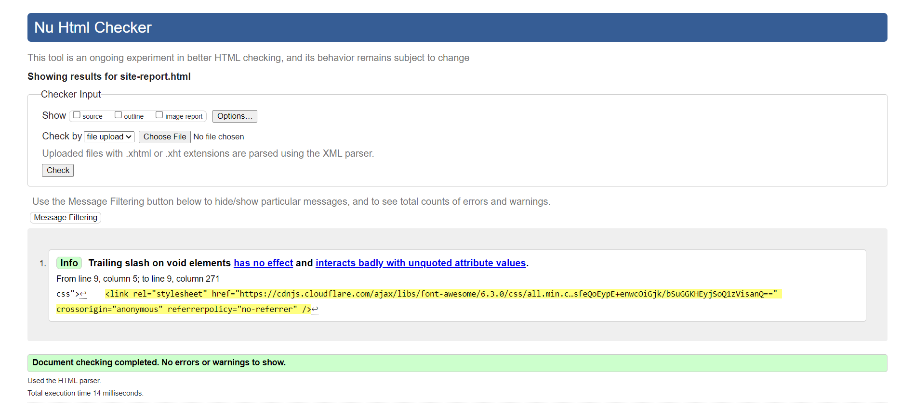

SITE REPORT
The goal of this project is to evaluate proficiency in utilizing Git/GitHub to manage the code using HTML and CSS to develop a portfolio page that has at least five pages.And i believe to have achieved the goals creating my own responsive portfolio site containing 5 pages (home,portfolio,contact,work experience and site report).Each page has been briefly described below.
Home page
This was the first step to developing this site and was quite challenging figuring out the design,theme and style of the site as it would be implemented throughout.The background image itself was inspired by the nature around . this is the initial page and does not provide any personal information but has name and profession only. This is also where i designed my nav-menu which i claim to be the most difficult part of the site.This took me majority of my time to make through trial and error . This is alos where i learned the most about the course and module and web-development itself.
Portfolio page
This page initially has placeholder photos that will be later updated by term 2 and other modules' work . at the moment it contains two photos and has a little about me ending off with my skills. this page is simple and doesnt contain any animations.
Contact page
this page contains a form and my contact details including my socials links in the icons . the form is not functional and is just for display currently which in the future will be made functional. this page contains slight animation on the form and the icons.
Experience page
this page contains details about both my education and work experience(fake). this page was intresting to come up with the design. it is also inspiried from Five-Star. this page has hover effects on the contents.
 

Conclusion
The purpose and objective of Web page is achieved. By providing graphical user interface, web page designing . l am over helmed in all humbleness and gratefulness to acknowledge my depth to all those who have helped me to put these ideas, well above the level of simplicity and into something concrete. | would like to express my special thanks of gratitude to my teacher Mr.chirag thapa as well as the university for providing me the golden opportunity to do this wonderful project, which also helped me in doing a lot of research and | came to know about so many new things. l am really thankful to them. Any attempt at any level cant be satisfactorily completed without the support and guidance of my parents and friends. | would like to thank my friends and teachers who guided me from time to time in making this project.
Validation
 



Refrence
experience page:https://www.youtube.com/watch?v=RvkHNGFRwEc
contact page:https://www.youtube.com/watch?v=xxQWKQzYyA8&list=LL&index=3